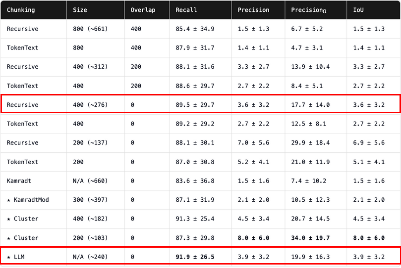

Chunking content¶
Done.
I've decided to stick with llamaindex as much as possible to keep the tech stack simple. There are a number of chunking strategies to choose from, but I prefer a strategy that with a high accuracy relative to some of the more advanced strategies, such as LLM-based chunking. It should also make logical sense given the types of documents I'll be processing. This research paper is worth a read: https://research.trychroma.com/evaluating-chunking.
Since all source documents will be specifications, technical docs, or API references related to developing code, I've decided to use recursive chunking with an approximate chunk size of 400 and no overlap across chunks. The ChromadB research paper suggests a chunk size of about 400 tokens. This is a perfect size since that equates to approximately 15 to 20 lines per chunk at 80 characters wide. That matches fairly well with the likely structure I'll encounter in the technical content available in my source markdown documents. In this case. I expect most content under each heading to fall within the 200-400 token range. My plan is to increase the accuracy by saving to metadata the hierarchical heading path as well as the child headings under the same section. I will also be adding custom metadata during processing.

Chunking Strategy¶
- Metadata
- Define metadata that cannot be programmatically created in a config file
- Store metadata in well-defined fields in the same table row as the chunk
- Use
llamaindexMarkdownNodeParser:include_metadata(bool): whether to include metadata in nodesinclude_prev_next_rel
- Chunking
- Chunk by heading (assuming structured, technical docs)
- Don't chunk H5 (keep with H4)
- If a heading and its child headings are < 500 chars, chunk together
- Reference code examples from each chunk
- Reference metadata from each chunk
- Summaries in metadata:
- Summarize each chunk and store in metadata
- Summarize H1 and store in metadata
Code example chunking¶
This strategy is evolving. . .
- Code Handling
- Use
CodeSplitterfromllama_index.node_parser:- Store code examples longer than 3 lines separately; reference from text chunk
- Chunk by function/class
splitter = CodeSplitter(
language='python', # or 'javascript', 'java', etc.
chunk_lines=50, # Number of lines per chunk
chunk_overlap=5 # Overlap lines for continuity
Embedding (create vectors)¶
- At embedding time, use an embedding model tuned for code:
- OpenAI:
text-embedding-3-smallis OK - Use
embed_model = OpenAIEmbedding()(creates vector representation)
Packages used¶
import os
import re
import openai
import uuid
import json
from llama_index.core import SimpleDirectoryReader
from llama_index.core.node_parser import MarkdownNodeParser
from llama_index.core.node_parser.text.code import CodeSplitter
from llama_index.core.settings import Settings
from llama_index.embeddings.openai import OpenAIEmbedding
from pygments.lexers import guess_lexer, ClassNotFound
from collections import OrderedDict
import logging